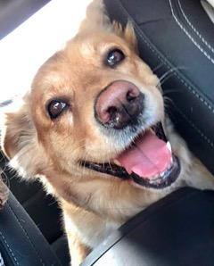

Zuly Villar

Summary
Freelance Translator, Writer, Content Creator, and Content Manager. Responsible for consistent blog post, product descriptions, SEO and general marketing content. 5+ Experience as a content manager.
Education
60 credits towards Spanish B. A. at City College of New York
Work History
yComo.net and ExpertosDeBelleza.com
2015 - Present
- Responsible for updating the websites with new, fresh content by researching relevant topics based on readership interests.
- Update social media platforms as well as keeping the sites visible with SEO, backlinks, directories and Interlinking related articles.
- Monitor websites using Google Analytics to improved user retention and cater to popular topics.
- Both sites have about 4,000 visitors a night.
Skills
Translating, Writting, WordPress Administration, Joomla, Google Analytics, HTML, Trados, Across.